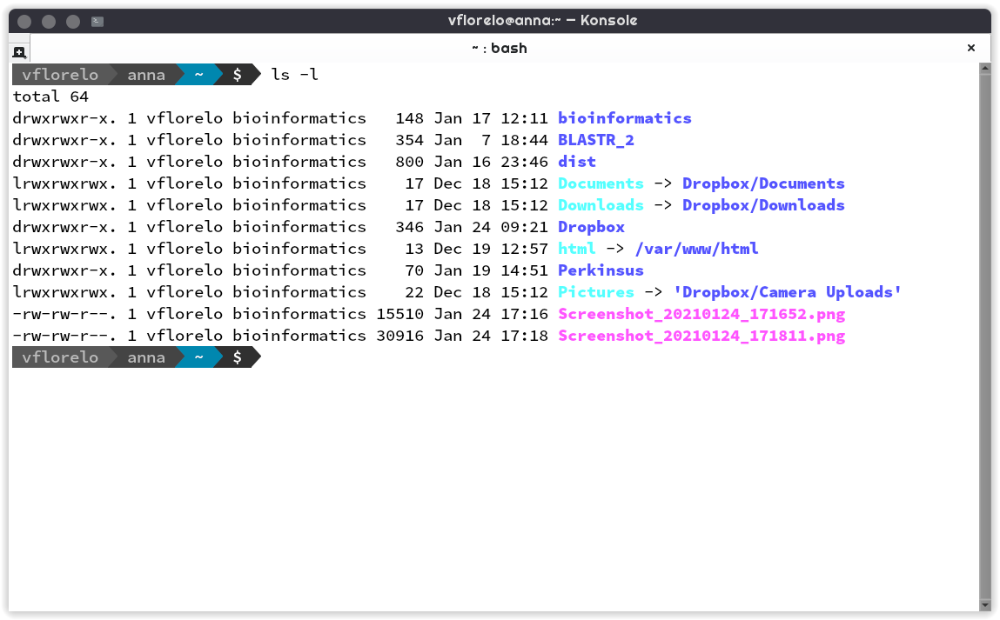

Introducción¶
Existen múltiples programas para el análisis de secuencias biológicas, algunos de ellos disponibles para Windows, GNU-Linux, OSX e incluso para android y iOS.
No obstante, los avances en las tecnologías de secuenciación y de obtención de datos proteícos a gran escala generan archivos que son dificilmente analizables en sistemas operativos como Windows u OSX, de modo que para operar los programas de más alto desempeño e interoperabilidad, requerimos aprender un poco (o un mucho) de GNU-Linux.
La bendita instancia¶
En esta ocasión te preparamos una máquina especial a la que puedes accesar en el horario del curso. Es una instancia en Amazon Web Services y de ahora en adelante nos referiremos a esta máquina como «la instancia»
Para ingresar a la instancia basta con ingresar a la dirección https://atgenomics.ddns.net:9090 en tu navegador.
Por compatibilidad y facilidad sugerimos hacer esto en Google chrome, no obstante otros navegadores funcionan bien.
Para entrar a la instancia, deberás ingresar tu nombre de usuario y tu contraseña.
Consideraciones y conceptos¶
Importante
Para el uso óptimo de la línea de comandos debemos tener en consideración las siguientes definiciones y precauciones
Shell¶
Es el intérprete entre el usuario y las aplicaciones
El shell recibe una entrada a manera de comandos
Estos comandos operan a través de aplicaciones
Las aplicaciones interactuan con el kernel controlando el procesador, la memoria RAM y el disco de la máquina
Terminal¶
La terminal o línea de comandos es una interfáz no gráfica con la cúal el usuario puede interactuar con el sistema. A pesar de su simpleza es una interfaz sumamente poderosa y eficiente, ya que nos permite ver que es lo que está ocurriendo tras bambalinas mientras un programa se está ejecutando. Es un estándar en el cómputo y seguirá siendolo por mucho tiempo más.

Prompt¶
{kind=link}
Comando¶
Un comando es la primera palabra que va después del prompt (o después de un pipe "|", eso lo veremos en parseo ), un comando es esencialmente un elemento ejecutable que puede ser un programa binario o un script
Advertencia
El comando debe estar presente en el
$PATHpara que la terminal lo pueda ejecutar
Opción¶
Ciertos comandos y programas pueden comportarse distinto si le pasamos una o más opciones.
Advertencia
Las opciones se especifican con el signo “-” o con los signos “--”
{kind=link}
Argumento¶
Un argumento es una o más palabras que vienen después de un comando, pueden ir antes o después de una opción (o no llevar opciones incluso)
{kind=link}
Combinaciones¶
En muchas ocasiones necesitaremos de opciones y de argumentos de modo que es indispensable saber como combinarlos
{kind=link}
$PATH¶
En unix/linux la variable de entorno $PATH contiene el conjunto de directorios que alberga aplicaciones en nuestro sistema
Peligro
Es una variable muy sensible, y moverla sin conocimiento puede tener consecuencias que afecten la sesión del usuario, hay que modificarla lo menos posible
Truco
Si queremos instalar un programa nuevo, lo podemos colocar en cualquiera de las carpetas enlistadas anteriormente y lo podemos invocar desde cualquier sitio en nuestra terminal
{kind=link}
Uso de mayúsculas y minúsculas¶
Peligro
Los sistemas unix/linux son sensibles al uso de mayúsculas y minúsculas!
Es importante revisar siempre lo que ingresas en la terminal antes de mandar cualquier instrucción
Uso de caracteres especiales¶
Existen caracteres con un significado específico del sistema, en consecuencia, se deben tratar de forma especial.
Estos caracteres son los siguientes y por lo general los ubicas en tu teclado en la barra numérica:
@
#
$
%
^
&
*
-
+
=
( )
{ }
[ ]
;
:
,
'
"
<
>
.
/
?
\
|
Advertencia
Si alguno de nuestros archivos tiene espacios en su nombre (o caracteres especiales), la terminal necesita saber que estos espacios son parte del mismo argumento
$ cat mi archivo.txt cat: mi: No such file or directory cat: archivo.txt: No such file or directoryCuando hicimos el comando
cat mi archivo.txt, lo que está ocurriendo es quecatespera dos archivos, un archivo llamado "mi", y un archivo llamado "archivo.txt".Al no existir estos archivos, la terminal nos arroja un mensaje de error
Esto lo solucionamos de dos formas:
Truco
Encerrando 'mi archivo.txt' entre comillas (dobles o sencillas):
$ cat "mi archivo.txt" Hola mundo!Escapando el espacio con el simbolo “\”:
$ cat mi\ archivo.txt Hola mundoAmbas soluciones hacen que «mi archivo.txt» sea un solo argumento en vez de dos.
Estas soluciones funcionan también para el resto de los caracteres especiales.
Comandos básicos¶
En esta sección encontraremos comandos básicos para el manejo de archivos, es indispensable que tengamos familiaridad con estos comandos antes de continuar con la manipulación de archivos
ls¶
List, nos indica que elementos hay en el directorio actual
Opciones de ls
Listado de los archivos en formato extendido (
-l)Listado de los archivos en formato extendido en lenguaje humano (
-l -h)Listado de los archivos incluido archivos ocultos (
-a)Listado de los archivos en orden cronológico (
-l -h -t)Listado de los archivos en orden alfanumérico reverso (
-l -h -r)Listado de los archivos en orden cronológico reverso (
-l -h -r -t)
cd¶
Change Directory nos cambia al directorio que le indiquemos
Modos de operación de cd
Dirigirse a un directorio dentro del directorio actual:
$ pwd /home/vflorelo $ ls dia_01 $ cd dia_01 $ pwd /home/vflorelo/dia_01 $ ls Homo_sapiens_GRCh38.fasta.fai test_data_variants.tsv test_data_variants.vcf
Dirigirse a un directorio usando una ruta absoluta:
$ pwd /home/vflorelo $ cd /home/vflorelo/dia_01 $ pwd /home/vflorelo/dia_01 $ cd /usr/local/bioinformatics $ pwd /usr/local/bioinformatics $ ls bcftools bin bwa data htslib include lib libexec samtools share $ cd /home/vflorelo/dia_01 $ pwd /home/vflorelo/dia_01
Dirigirse al directorio superior:
$ pwd /home/vflorelo/dia_01 $ cd .. $ pwd /home/vflorelo
Dirigirse a un directorio usando una ruta relativa:
$ pwd /home/vflorelo/dia_01 $ cd ../dia_02 $ pwd /home/vflorelo/dia_02
mkdir¶
Make Directory, crea un directorio con el nombre que le indiquemos
Modos de operación de mkdir
Crear a un directorio dentro del directorio actual:
$ pwd /home/vflorelo $ ls dia_01 $ mkdir dia_02 $ ls dia_01 dia_02
Crear un directorio usando una ruta absoluta:
$ pwd /home/vflorelo $ mkdir /home/vflorelo/dia_03 $ pwd /home/vflorelo $ ls dia_01 dia_02 dia_03
Crear un directorio usando una ruta relativa:
$ pwd /home/vflorelo/dia_01 $ mkdir ../dia_04 $ cd .. $ pwd /home/vflorelo $ ls dia_01 dia_02 dia_03 dia_04
cp¶
Copy, copia un archivo a un directorio (o al mismo directorio pero con nombre diferente)
Modos de operación de
cp
Copiar el contenido de un archivo a otro archivo:
$ cp mi_archivo.txt mi_nuevo_archivo.txt $ cat mi_nuevo_archivo.txt Hola mundo!Copiar el archivo desde el directorio actual a otro directorio:
$ ls mi_archivo.txt otro_directorio $ ls otro_directorio $ cp mi_archivo.txt otro_directorio $ ls otro_directorio mi_archivo.txtAdvertencia
Si no existe el directorio “otro_directorio”, cp creará un nuevo archivo llamado “otro_directorio”
mv¶
Move, mueve un archivo de un lugar a otro (o le cambia el nombre al archivo)
Modos de operacion de
mv
Cambia el nombre de un archivo a otro archivo:
$ mv mi_archivo.txt mi_nuevo_archivo.txt $ cat mi_nuevo_archivo.txt Hola mundo! $ cat mi_archivo.txt cat: mi_archivo.txt: No such file or directoryMover el archivo desde el directorio actual a otro directorio:
$ ls mi_archivo.txt otro_directorio $ ls otro_directorio $ mv mi_archivo.txt otro_directorio $ ls otro_directorio $ ls otro_directorio mi_archivo.txtAdvertencia
Si no existe el directorio «otro_directorio», mv le cambiará el nombre a “mi_archivo.txt” y se llamará “otro_directorio”, “mi_archivo.txt” no existirá más
Peligro
Si ya existe un archivo con el nombre que le indiquemos a
mvcomo destino, perderemos la información del archivo destino:$ ls archivo_equis.txt tesis_final.docx $ cat archivo_equis.txt Este archivo contiene basura $ mv archivo_equis.txt tesis_final.docx $ ls tesis_final.docx $ cat tesis_final.docx Este archivo contiene basura
rm¶
Remove, elimina el archivo o directorio indicado
Modos de operacion de
rm
elimina un archivo:
$ ls mi_archivo.txt mi_nuevo_archivo.txt $ rm mi_archivo.txt $ ls mi_nuevo_archivo.txtElimina un directorio con todos sus elementos:
$ ls otro_directorio $ ls otro_directorio mi_archivo.txt $ rm -r otro_directorio $ ls otro_directorio ls: cannot access 'otro_directorio': No such file or directoryPeligro
rmes un comando destructivo, si se borran los archivos no son recuperables
cat¶
Concatenate, nos muestra el contenido de un archivo, o archivos
less¶
Less nos muestra el contenido de un archivo, pero nos lo muestra, una pantalla a la vez
head¶
- Head, nos da las primeras N líneas de un archivo
Modos de operación de
headMuestra las primeras 10 líneas de un archivo:
$ head snpEff_genes.txt # The following table is formatted as tab separated values. #GeneName GeneId TranscriptId BioType variants_impact_HIGH variants_impact_LOW variants_impact_MODERATE variants_impact_MODIFIER variants_effect_3_prime_UTR_variant variants_effect_5_prime_UTR_premature_start_codon_gain_variant variants_effect_5_prime_UTR_variant variants_effect_conservative_inframe_deletionvariants_effect_conservative_inframe_insertion variants_effect_disruptive_inframe_deletion variants_effect_disruptive_inframe_insertion variants_effect_downstream_gene_variant variants_effect_frameshift_variant variants_effect_intron_variant variants_effect_missense_variant variants_effect_non_coding_transcript_exon_variant variants_effect_non_coding_transcript_variant variants_effect_splice_acceptor_variant variants_effect_splice_donor_variant variants_effect_splice_region_variantvariants_effect_start_lost variants_effect_stop_gained variants_effect_stop_lost variants_effect_stop_retained_variant variants_effect_synonymous_variant variants_effect_upstream_gene_variant A2M ENSG00000175899 ENST00000318602 protein_coding 1 1 1 0 0 0 0 0 0 0 0 0 0 2 1 00 1 0 2 0 0 0 0 0 0 A2M ENSG00000175899 ENST00000462568 retained_intron 0 1 0 1 0 0 0 0 0 0 0 0 0 1 0 00 0 0 1 0 0 0 0 0 1 A2M ENSG00000175899 ENST00000472360 retained_intron 0 0 0 2 0 0 0 0 0 0 0 2 0 0 0 00 0 0 0 0 0 0 0 0 0 A2M ENSG00000175899 ENST00000543436 processed_transcript 0 1 0 2 0 0 0 0 0 0 0 0 0 1 00 0 0 0 1 0 0 0 0 0 2 A2M ENSG00000175899 ENST00000545828 processed_transcript 0 0 0 3 0 0 0 0 0 0 0 0 0 3 00 0 0 0 0 0 0 0 0 0 0 A2M ENSG00000175899 ENST00000546069 nonsense_mediated_decay 1 0 0 3 1 0 0 0 0 0 0 1 0 1 01 0 1 0 1 0 0 0 0 0 0 A4GALT ENSG00000128274 ENST00000249005 protein_coding 0 2 1 0 0 0 0 0 0 0 0 0 0 0 1 00 0 0 0 0 0 0 0 2 0 A4GALT ENSG00000128274 ENST00000381278 protein_coding 0 2 1 0 0 0 0 0 0 0 0 0 0 0 1 00 0 0 0 0 0 0 0 2 0
Muestra las primeras 2 líneas de un archivo:
$ head -n2 snpEff_genes.txt # The following table is formatted as tab separated values. #GeneName GeneId TranscriptId BioType variants_impact_HIGH variants_impact_LOW variants_impact_MODERATE variants_impact_MODIFIER variants_effect_3_prime_UTR_variant variants_effect_5_prime_UTR_premature_start_codon_gain_variant variants_effect_5_prime_UTR_variant variants_effect_conservative_inframe_deletionvariants_effect_conservative_inframe_insertion variants_effect_disruptive_inframe_deletion variants_effect_disruptive_inframe_insertion variants_effect_downstream_gene_variant variants_effect_frameshift_variant variants_effect_intron_variant variants_effect_missense_variant variants_effect_non_coding_transcript_exon_variant variants_effect_non_coding_transcript_variant variants_effect_splice_acceptor_variant variants_effect_splice_donor_variant variants_effect_splice_region_variantvariants_effect_start_lost variants_effect_stop_gained variants_effect_stop_lost variants_effect_stop_retained_variant variants_effect_synonymous_variant variants_effect_upstream_gene_variant
Muestra las primeras líneas de un archivo exceptuando las ultimas 2 líneas:
$ head -n-2 snpEff_genes.txt < Mucho output como para mostrarlo ;) > ZSWIM8 ENSG00000214655 ENST00000605216 protein_coding 0 0 0 1 0 0 0 0 0 0 0 1 0 0 0 00 0 0 0 0 0 0 0 0 0 ZSWIM8-AS1 ENSG00000272589 ENST00000456638 0 0 0 1 0 0 0 0 0 0 0 0 0 0 0 00 0 0 0 0 0 0 0 0 1
tail¶
Tail, nos da las últimas N líneas de un archivo
Modos de operación de tail
Muestra las últimas 10 líneas de un archivo:
$ tail snpEff_genes.txt ZSWIM8 ENSG00000214655 ENST00000603195 processed_transcript 0 0 0 1 0 0 0 0 0 0 0 1 0 0 00 0 0 0 0 0 0 0 0 0 0 ZSWIM8 ENSG00000214655 ENST00000603309 processed_transcript 0 0 0 1 0 0 0 0 0 0 0 1 0 0 00 0 0 0 0 0 0 0 0 0 0 ZSWIM8 ENSG00000214655 ENST00000603409 processed_transcript 0 0 0 1 0 0 0 0 0 0 0 1 0 0 00 0 0 0 0 0 0 0 0 0 0 ZSWIM8 ENSG00000214655 ENST00000603840 processed_transcript 0 0 0 1 0 0 0 0 0 0 0 1 0 0 00 0 0 0 0 0 0 0 0 0 0 ZSWIM8 ENSG00000214655 ENST00000604165 processed_transcript 0 0 0 1 0 0 0 0 0 0 0 1 0 0 00 0 0 0 0 0 0 0 0 0 0 ZSWIM8 ENSG00000214655 ENST00000604524 protein_coding 0 0 0 1 0 0 0 0 0 0 0 1 0 0 0 00 0 0 0 0 0 0 0 0 0 ZSWIM8 ENSG00000214655 ENST00000604729 protein_coding 0 0 0 1 0 0 0 0 0 0 0 1 0 0 0 00 0 0 0 0 0 0 0 0 0 ZSWIM8 ENSG00000214655 ENST00000604754 protein_coding 0 0 0 1 0 0 0 0 0 0 0 1 0 0 0 00 0 0 0 0 0 0 0 0 0 ZSWIM8 ENSG00000214655 ENST00000605216 protein_coding 0 0 0 1 0 0 0 0 0 0 0 1 0 0 0 00 0 0 0 0 0 0 0 0 0 ZSWIM8-AS1 ENSG00000272589 ENST00000456638 0 0 0 1 0 0 0 0 0 0 0 0 0 0 0 00 0 0 0 0 0 0 0 0 1
Muestra las últimas 2 lineas de un archivo:
$ tail -n2 snpEff_genes.txt ZSWIM8 ENSG00000214655 ENST00000605216 protein_coding 0 0 0 1 0 0 0 0 0 0 0 1 0 0 0 00 0 0 0 0 0 0 0 0 0 ZSWIM8-AS1 ENSG00000272589 ENST00000456638 0 0 0 1 0 0 0 0 0 0 0 0 0 0 0 00 0 0 0 0 0 0 0 0 1
Muestra las últimas líneas de un archivo exceptuando las primeras 2 líneas:
$ tail -n+3 Homo_sapiens_GRCh38.fasta.fai A2M ENSG00000175899 ENST00000318602 protein_coding 1 1 1 0 0 0 0 0 0 0 0 0 0 2 1 00 1 0 2 0 0 0 0 0 0 A2M ENSG00000175899 ENST00000462568 retained_intron 0 1 0 1 0 0 0 0 0 0 0 0 0 1 0 00 0 0 1 0 0 0 0 0 1 A2M ENSG00000175899 ENST00000472360 retained_intron 0 0 0 2 0 0 0 0 0 0 0 2 0 0 0 00 0 0 0 0 0 0 0 0 0 A2M ENSG00000175899 ENST00000543436 processed_transcript 0 1 0 2 0 0 0 0 0 0 0 0 0 1 00 0 0 0 1 0 0 0 0 0 2 A2M ENSG00000175899 ENST00000545828 processed_transcript 0 0 0 3 0 0 0 0 0 0 0 0 0 3 00 0 0 0 0 0 0 0 0 0 0 A2M ENSG00000175899 ENST00000546069 nonsense_mediated_decay 1 0 0 3 1 0 0 0 0 0 0 1 0 1 01 0 1 0 1 0 0 0 0 0 0 A4GALT ENSG00000128274 ENST00000249005 protein_coding 0 2 1 0 0 0 0 0 0 0 0 0 0 0 1 00 0 0 0 0 0 0 0 2 0 A4GALT ENSG00000128274 ENST00000381278 protein_coding 0 2 1 0 0 0 0 0 0 0 0 0 0 0 1 00 0 0 0 0 0 0 0 2 0 A4GALT ENSG00000128274 ENST00000401850 protein_coding 0 2 1 0 0 0 0 0 0 0 0 0 0 0 1 00 0 0 0 0 0 0 0 2 0 A4GALT ENSG00000128274 ENST00000465765 processed_transcript 0 0 0 3 0 0 0 0 0 0 0 3 0 0 00 0 0 0 0 0 0 0 0 0 0 < Y un montón más de output >
wc¶
Word count, nos indica el número de líneas, palabras y caracteres de un archivo o de un string
Modos de operación de wc
Nos da un resumen del contenido de un archivo:
$ wc snpEff_genes.txt 37200 1113368 3956494 snpEff_genes.txt
Cuenta el número de líneas en un archivo:
$ wc -l snpEff_genes.txt 37200 snpEff_genes.txt
Cuenta el número de palabras en un archivo:
$ wc -w snpEff_genes.txt 1113368 snpEff_genes.txt
Cuenta el número de caracteres en un archivo:
$ wc -c snpEff_genes.txt 3956494 snpEff_genes.txt